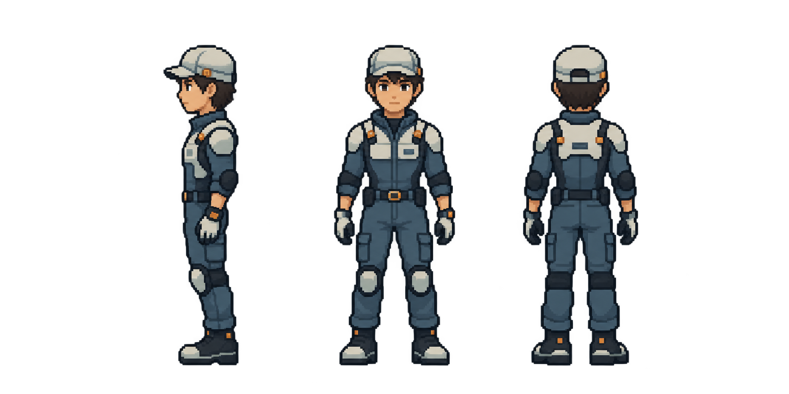
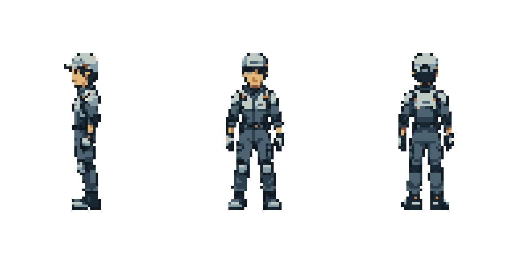

HUMAN TECHNICIAN · V001按人类动作模板重新建立角色
保留项目的作业服、浅色护具与黄铜材料语言，使用人类四肢比例。当前为母版与四组侧视试样。
原模板 · 同序号帧
公开预览原帧镜像朝左。蓝框、倒影只属于参考图。
新的人类角色
64×96，固定接地锚点。重新生成的姿势试样，未做精确骨骼轨迹复刻。

重点检查左右腿换步、膝盖弯曲、脚掌落地和头身一致性。初稿中转向错误的行走稿已排除；当前各帧面向左侧，细节仍待视觉反馈。
人形母版 · 左侧 / 正面 / 背面
上图为造型母稿，下图为64×96固定画布整理预览；当前都属于候选。


完整动画匹配台账
公开页面条目可能包含多段阶段，不等于源包标签总数。只有当前四项进入试样，其余未开始；等待完整原始素材后核对全部帧与时序。
下载人形母版与29帧试样 · 角色与动作规范 · Dead Revolver 参考来源